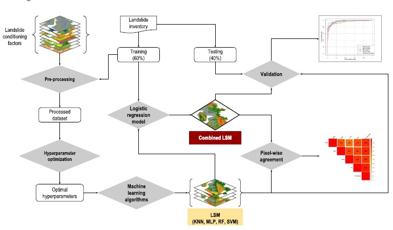

The scarcity of reliable data availability is a major obstacle for monitoring and identifying important health and sustainability information, especially in developing countries. This research aims to bridge this gap by utilizing machine learning techniques to extract valuable insights from satellite imagery, addressing challenges in health and sustainability sectors.
Despite yielding considerable degrees of accuracy in landslide predictions, different landslide susceptibility models often disagree spatially, leading to uncertainties. This study presents an approach to diagnose and reduce these uncertainties.
Read the Paper 